01/05/2022 — Một người đàn ông 40 mấy tuổi thật sự cần bạn hiểu điện tâm đồ của anh ấy
Bản dịch tiếng Việt của bài "A man in his 40s who really needs you to understand his ECG" – Dr. Smith’s ECG Blog. Giữ nguyên toàn bộ 14 hình ảnh của bản gốc.
Tác giả: Pendell Meyers
Một người đàn ông 40 mấy tuổi đến khám vì “đau ngực bên trái khởi phát đột ngột hôm qua khi hắt hơi và ho, đau tăng khi hít vào.” Anh cũng than phiền khó thở (SOB), chóng mặt, đau hàm và đau lưng đi kèm, mà anh mô tả là “co thắt cơ”. Anh cũng bị chảy nước mũi và ho trong 1 tuần. Ngoài ra, hôm nay bị tê bàn tay trái.
Anh đến một cơ sở chăm sóc khẩn cấp (urgent care) để được đánh giá. Tại đó đã ghi một điện tâm đồ (không có sẵn), được cho là bất thường, nên đội cấp cứu ngoài viện (EMS) được gọi tới cơ sở này để đưa anh đến khoa cấp cứu (ED).
Khi EMS đến, họ ghi nhận bệnh nhân nôn rồi mất đáp ứng. Theo mô tả, bệnh nhân ngừng tim với hoạt động điện vô mạch (PEA), nên họ bắt đầu ép tim. Sau khoảng 30 giây ép tim, trước khi kịp gắn máy khử rung, bệnh nhân bắt đầu cử động và rên rỉ. Dấu hiệu sinh tồn sau đó cho thấy nhịp chậm, tụt huyết áp và giảm oxy máu. Sau đó anh được chuyển đến khoa cấp cứu.
EMS đã ghi một điện tâm đồ và truyền cho các bác sĩ khoa cấp cứu trước khi đến:

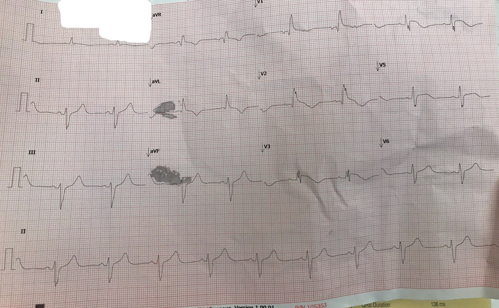
Đây là cùng hình ảnh đó sau khi được xử lý bằng ứng dụng PM Cardio:

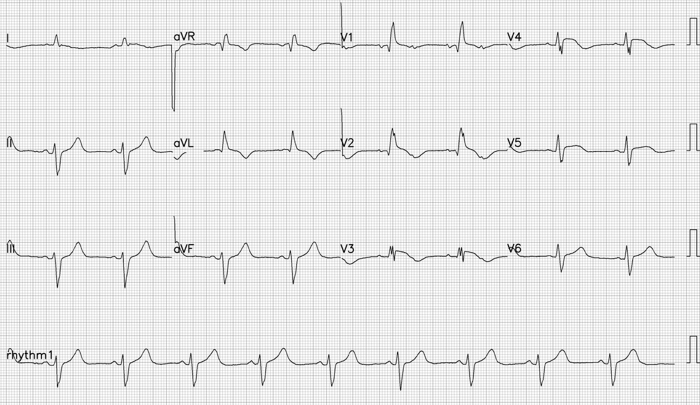
Đây là một điện tâm đồ bất thường và đáng sợ. Có nhịp xoang tần số khoảng 120 lần/phút kèm blốc AV 2:1 (xem chuyển đạo V1, nơi sóng P rất rõ), dẫn tới tần số thất gần 60 lần/phút. QRS có hình ảnh RBBB và LAFB. Có ST chênh lên (STE) đồng hướng ở V1-V5. Các chuyển đạo dưới có sóng T dương lớn, nhiều khả năng là sóng T tối cấp, kèm sóng T đảo ngược (TWI) soi gương với thể tích lớn ở aVL (lớn hơn mức chờ đợi do LAFB). Sóng T ở V2-V4 có phần cuối sóng T đảo ngược, nhưng tôi không bị thuyết phục hay cảm thấy yên tâm rằng có thể đã có tái tưới máu đáng kể; nhìn chung, đây trông như OMI đang diễn ra.
Nói cách khác, điện tâm đồ này có giá trị chẩn đoán tắc LAD đoạn gần (hoặc thậm chí thân chung động mạch vành trái), nhưng có thêm blốc AV 2:1.
Điện tâm đồ đầu tiên khi đến khoa cấp cứu:

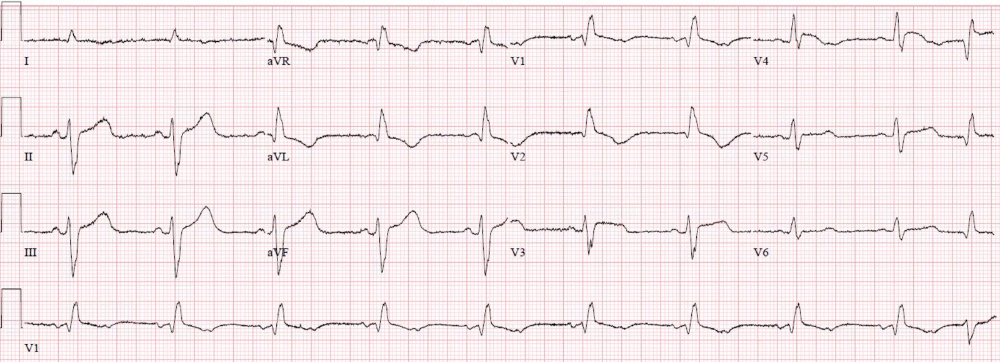
20 phút sau:

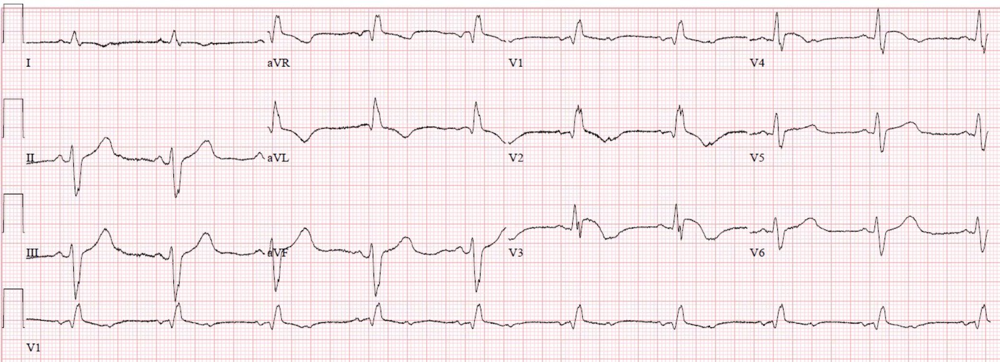
Phòng thông tim (cath lab) đã được kích hoạt.
Siêu âm tim tại giường cho thấy chức năng thất trái rất kém, đường B lan tỏa hai bên. Bác sĩ khoa cấp cứu chẩn đoán sốc tim do OMI.
Bác sĩ tim mạch đã hủy kích hoạt phòng thông tim và đến tại giường. Ông tuyên bố sẽ không thông tim cho bệnh nhân trước khi loại trừ thuyên tắc phổi (PE) bằng chụp CT mạch máu.
Ghi chú bên lề: Ngay cả khi không hiểu điện tâm đồ, PE thường không gây blốc AV cấp, và rõ ràng hình ảnh siêu âm tim tại giường ở khoa cấp cứu hoàn toàn ngược với suy thất phải.
Bác sĩ khoa cấp cứu không thể thuyết phục ông ấy, nên đã đẩy bệnh nhân đi chụp CT ngay lập tức và thực hiện chụp CT mạch máu trong vòng 20 phút, rồi thuyết phục được bác sĩ tim mạch rằng trên phim không có PE lớn ở đoạn gần.
Vì vậy, sự chậm trễ đưa đi thông tim chỉ khoảng 45 phút hoặc một giờ. Khi thông tim, chỉ số tim của bệnh nhân là 1.9 L/phút/m2 ngay cả khi đang dùng dopamine, và một thiết bị hỗ trợ Impella đã được đặt trước khi chụp mạch vành. Bệnh nhân cũng được đặt nội khí quản vào khoảng thời gian này.
Chụp mạch vành cho thấy LAD đoạn gần tắc 100% cấp tính do huyết khối. Biên bản cũng mô tả hẹp 100% ở LAD đoạn giữa và đoạn xa. Ba stent đã được đặt, ở LAD đoạn gần, đoạn giữa và đoạn xa. Ở mỗi vị trí, mức hẹp tồn lưu được ghi là 0%. Đáng tiếc, dòng chảy TIMI sau thủ thuật được ghi là 2 (thay vì 3, tức là dòng chảy bình thường và tái tưới máu thành công). Đáng tiếc là biên bản thông tim không mô tả chi tiết lý do và các can thiệp đã thử để xử trí dòng chảy dưới mức tối ưu. Tôi có cảm giác rằng, dù đã nỗ lực hết sức, dòng chảy qua LAD thủ phạm vẫn không thể được khôi phục hoàn toàn dù đã PCI.
Dưới đây là một số hình ảnh thông tim:

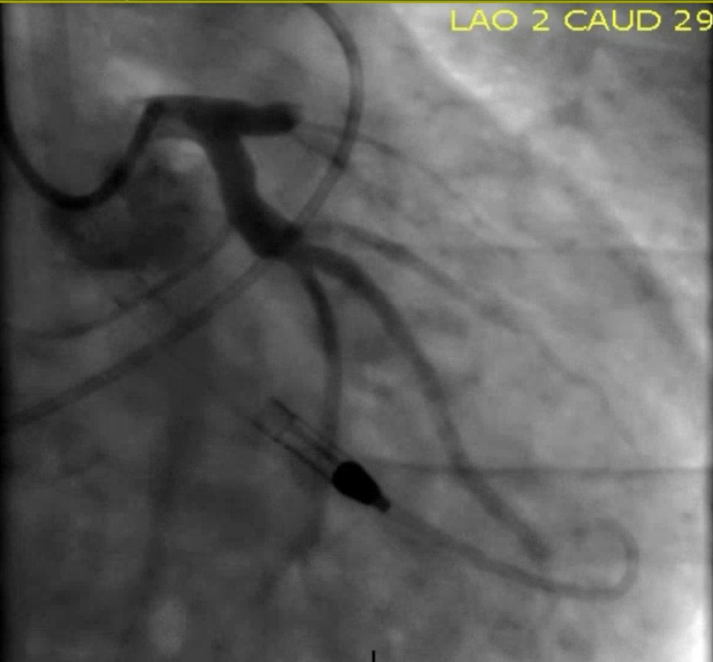

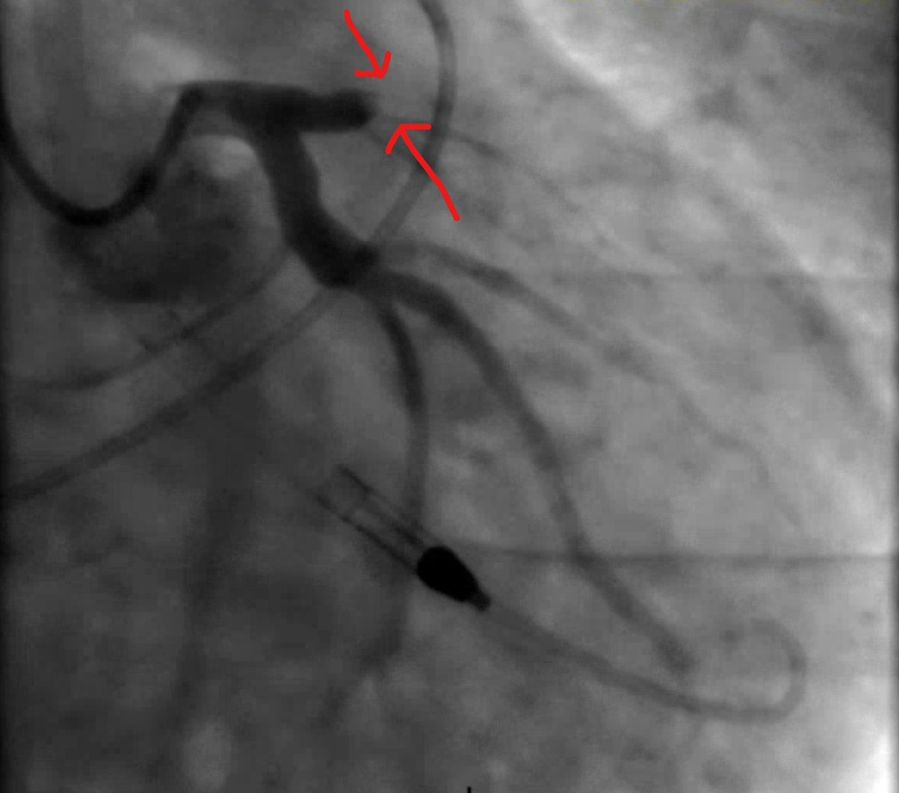

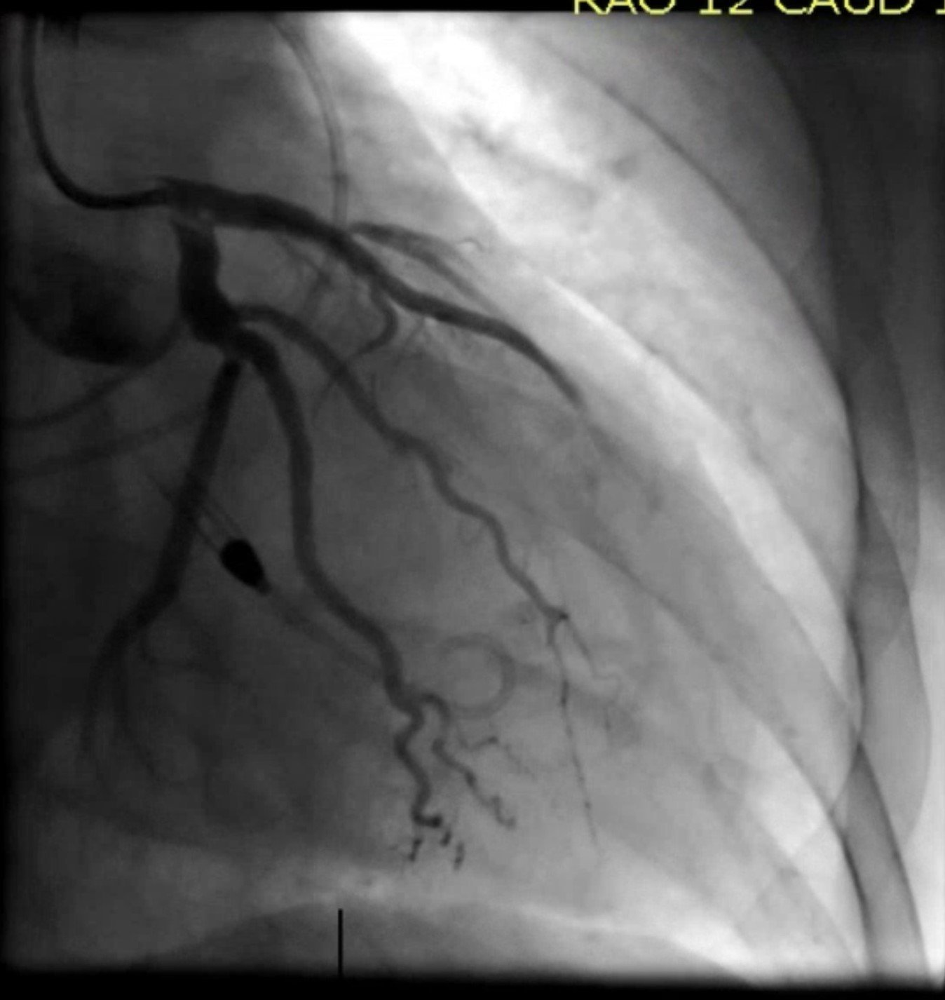
Không có sẵn điện tâm đồ ngay sau thông tim.
Troponin T ban đầu (thế hệ cũ, cả giới hạn phát hiện lẫn giá trị bất thường thấp nhất đều là 0.01 ng/mL; nói cách khác, xét nghiệm này hoặc không phát hiện được khi dưới 0.01 ng/mL, hoặc bất thường khi từ 0.01 trở lên) trả về 4.52 ng/mL (rất cao, đã cao hơn mức trung bình của STEMI trong các nghiên cứu của chúng tôi).
Cuối đêm hôm đó, điều này xảy ra (bệnh nhân đã đặt nội khí quản, đang an thần):

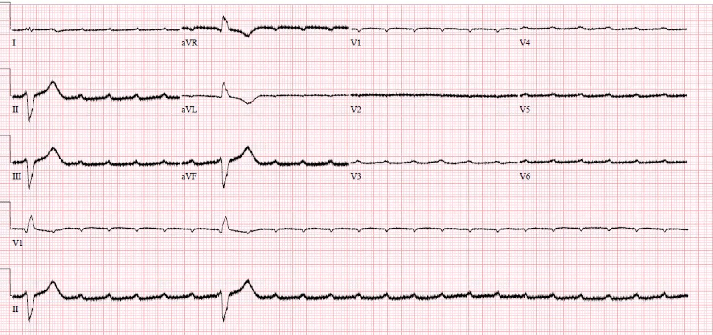
Bệnh nhân được tạo nhịp qua da, rồi một máy tạo nhịp qua tĩnh mạch (transvenous pacer) được đặt (có vẻ như blốc AV 2:1 đã không được nhận ra trên các điện tâm đồ trước đó, và không có dây tạo nhịp tạm thời nào được đặt khi ở phòng thông tim!).
Đây là điện tâm đồ sau khi đặt máy tạo nhịp qua tĩnh mạch (TVP):

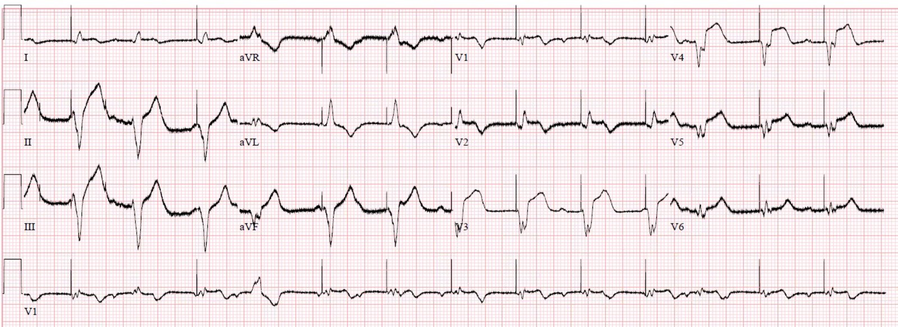
Dưới đây là vài chuyển đạo được phóng to:

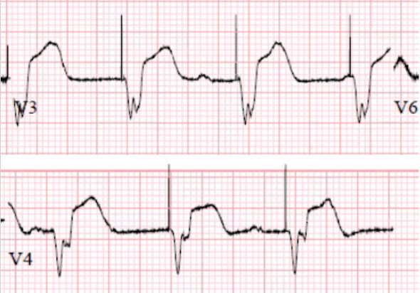
Đây là các chuyển đạo đó được chú thích tỷ lệ ST/S mà chúng tôi dùng trong tiêu chuẩn Sgarbossa cải biên:

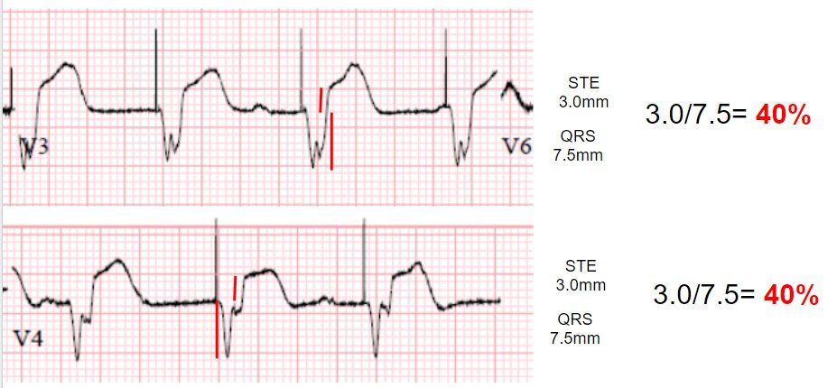
Như bạn thấy, điện tâm đồ dương tính theo tiêu chuẩn Sgarbossa cải biên, gợi ý OMI vẫn đang tiến triển. Các chuyển đạo dưới trông cũng đáng lo ngại. Lưu ý rằng điện tâm đồ âm tính giả với OMI theo tiêu chuẩn Sgarbossa nguyên bản, vì không có chuyển đạo nào có ST chênh lên ngược hướng 5mm.
Đáng buồn là hình ảnh này khiến lo ngại hiện tượng không tái lưu (no-reflow). Dù can thiệp đã cải thiện dòng chảy trên phim chụp mạch, cơ tim không cho thấy dấu hiệu tái tưới máu đáng kể. Thay vào đó, điện tâm đồ đang diễn tiến như một nhồi máu cơ tim xuyên thành đã hoàn tất.
Tái tưới máu vi mạch kém (“Không tái lưu” – No Reflow): Chẩn đoán tốt nhất bằng điện tâm đồ
Siêu âm tim sáng hôm sau cho thấy EF 24%, giảm động nặng ở thành trước, trước-bên, thành dưới đoạn giữa, vách trước đoạn đáy, vách dưới đoạn giữa và toàn bộ mỏm. Cũng có hiện tượng thuốc cản âm xoáy mạnh ở mỏm thất trái, phù hợp với tình trạng dòng chảy thấp. Có một cấu trúc tăng âm di động, rất nhỏ và mảnh, bám vào thành bên vùng mỏm, có thể là huyết khối thất trái.
Troponin T đạt đỉnh 8.43 ng/mL (rất cao, nhồi máu cơ tim nặng nề và kết cục lâu dài xấu).
Vài ngày sau:

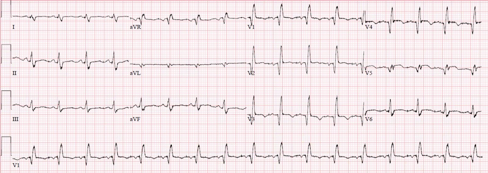
Xem bài này: Dyspnea, Right Bundle Branch block, and ST elevation (Khó thở, blốc nhánh phải và ST chênh lên)
Bệnh nhân dường như sống sót đến khi ra viện, nhưng rõ ràng tiên lượng lâu dài rất ảm đạm.
Những điểm cần học:
Hội chứng vành cấp (ACS) kèm RBBB và LAFB mới xuất hiện là một dấu hiệu nguy cơ rất cao của OMI do tắc LAD đoạn gần, với tỷ lệ sốc tim và tử vong rất cao ngay cả trước khi can thiệp cấp cứu.
PE không gây blốc AV.
Hãy dùng tiêu chuẩn Sgarbossa cải biên như cách tiếp cận tốt nhất hiện có để phát hiện OMI trong nhịp tạo nhịp thất.
Hiện tượng không tái lưu xảy ra khi tái tưới máu vi mạch thất bại dù đã can thiệp mạch vành thượng tâm mạc. Theo hiểu biết của tôi, không thể tiên đoán được hiện tượng này trước khi tiến hành can thiệp.
Các ca OMI do tắc LAD khác kèm RBBB/LAFB:
Cardiac Arrest at the airport, with an easy but important ECG for everyone to recognize (Ngừng tim ở sân bay, với một điện tâm đồ dễ nhưng quan trọng mà ai cũng cần nhận ra)
A woman in her 60s with 6 hours of chest pain, dyspnea, tachycardia, and hypoxemia (Một phụ nữ 60 mấy tuổi bị đau ngực, khó thở, nhịp nhanh và giảm oxy máu trong 6 giờ)
Ventricular Fibrillation, ROSC after perfusion restored by ECMO, then ECG. Protocols can be overridden by Physician Judgment. (Rung thất, tái lập tuần hoàn tự nhiên sau khi tưới máu được khôi phục bằng ECMO, rồi mới đến điện tâm đồ. Phán đoán của bác sĩ có thể vượt lên trên phác đồ.)
What is the Diagnosis in this 70-something with Chest Pain? (Chẩn đoán là gì ở bệnh nhân 70 mấy tuổi bị đau ngực này?)
68 minutes with chest compressions, full recovery. Plus recommendations from a 5-member panel on cardiac arrest. (68 phút ép tim, hồi phục hoàn toàn. Kèm các khuyến nghị về ngừng tim của một hội đồng 5 thành viên.)
A deadly alcohol binge: a man in his 30s with chest pain and initial high sensitivity troponin I within normal limits (Một cuộc nhậu chết người: người đàn ông 30 mấy tuổi bị đau ngực, troponin I độ nhạy cao ban đầu trong giới hạn bình thường)
Wide Complex Tachycardia; It’s really sinus, RBBB + LAFB, and massive ST elevation (Nhịp nhanh QRS rộng; thực ra là nhịp xoang, RBBB + LAFB và ST chênh lên rất nhiều)
Resuscitated from ventricular fibrillation: what is the ECG Diagnosis? (Được hồi sinh sau rung thất: chẩn đoán điện tâm đồ là gì?)
A man in his 80s with chest pain (Một người đàn ông 80 mấy tuổi bị đau ngực)
What, besides large anterior STEMI, is so ominous about this ECG? (Ngoài STEMI thành trước diện rộng, điều gì ở điện tâm đồ này đáng ngại đến vậy?)
Chest Pain and Right Bundle Branch Block (Đau ngực và blốc nhánh phải)
Một số trường hợp tắc LAD hoặc thân chung động mạch vành trái nặng nhất biểu hiện bằng RBBB và LAFB cấp, và các dấu hiệu này mang nguy cơ cao nhất về rung thất cấp, sốc tim cấp và tử vong nội viện cao nhất theo nghiên cứu của Widimsky và cs. (tử vong nội viện là 18.8% đối với nhồi máu cơ tim cấp (AMI) chỉ kèm RBBB mới). Ngoài ra, RBBB và LAFB khiến việc nhận diện điểm J và ST chênh lên khó hơn và dễ bị đọc sai hơn. Khi tái tưới máu thành công và kịp thời, bệnh nhân có thể hồi phục chức năng của các phân nhánh trước đó bị thiếu máu cục bộ hoặc bị choáng (stunned).
Widimsky PW, Rohác F, Stásek J, và cs. Primary angioplasty in acute myocardial infarction with right bundle branch block: should new onset right bundle branch block be added to future guidelines as an indication for reperfusion therapy? Tạp chí Eur Heart J, 2012;33(1):86–95.
https://pubmed.ncbi.nlm.nih.gov/21890488/ (bài báo trên PubMed)

===================================
BÌNH LUẬN CỦA TÔI, bởi KEN GRAUER, MD (1/5/2022):
===================================
Một ca bệnh rất bổ ích do Dr. Meyers trình bày — với hàng loạt bài học cần ghi nhớ. Tôi tập trung bình luận vào phiên bản đã được ứng dụng PM Cardio xử lý của bản ghi ban đầu do EMS ghi, mà tôi đã đăng lại trong Hình 1.
Như Dr. Meyers đã nêu — điện tâm đồ này gợi ý mạnh tắc LAD đoạn gần cấp. Nó không gợi ý PE cấp.
- Có blốc hai phân nhánh (RBBB/LAHB) — một dấu hiệu thường đi kèm các trường hợp tắc LAD đoạn gần diện rộng.
- Sóng lệch dương ban đầu thường thấy (sóng r) của RBBB đã bị thay bằng sóng Q ban đầu lớn ở chuyển đạo V1 và V2 (xác nhận nhồi máu trước vách diện rộng). Sự phân mảnh (khía) thêm ở chuyển đạo V2, và đặc biệt ở chuyển đạo V3,V4 — cung cấp thêm bằng chứng về “sẹo”.
- Bằng chứng ủng hộ rằng chỗ tắc LAD bắt đầu từ đoạn gần — đến từ nhận xét rằng ST chênh lên bắt đầu ngay từ chuyển đạo V1. ST chênh lên dường như tối đa ở chuyển đạo V3,V4 — và tiếp tục đến chuyển đạo V5.
ĐIỂM THEN CHỐT (PEARL) #1: Bình thường, với RBBB hoàn toàn — sẽ có một mức độ ST-T chênh xuống nhất định ở chuyển đạo này, phản ánh biến đổi tái cực ngược hướng vốn được chờ đợi khi có RBBB. Việc bất chấp điều này, vẫn có một ít ST chênh lên ở chuyển đạo V1, gợi ý rằng nếu không có rối loạn dẫn truyền này — mức ST chênh lên tương đối ở chuyển đạo V1 hẳn đã lớn hơn đáng kể.
- LƯU Ý: Khoa Tim mạch đã bày tỏ lo ngại về khả năng PE cấp diện rộng. Mặc dù sóng T đảo ngược ở thành trước kèm QTc dài là những dấu hiệu gợi ý “tăng gánh” thất phải cấp — phần còn lại của điện tâm đồ 12 chuyển đạo (như Dr. Meyers đã nêu) không gợi ý PE cấp vì: i) Có blốc AV (Xem bên dưới); ii) ST chênh lên thấy ở các chuyển đạo từ V1 đến V5 (điều không được chờ đợi khi có PE cấp); và, iii) Hình dạng ST-T ở các chuyển đạo dưới hoàn toàn ngược với những gì nên thấy khi có PE cấp diện rộng (tức là, sóng T “quá đầy đặn” (hypervoluminous), trông như sóng T tối cấp ở các chuyển đạo dưới — thay vì sóng T đảo ngược của tăng gánh thất phải).

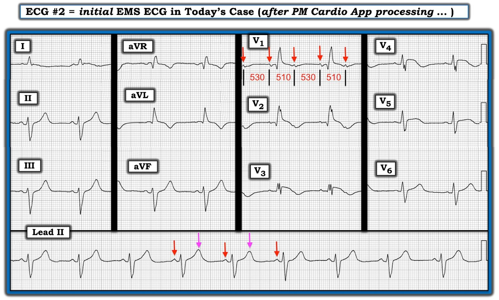
Còn nhịp trong Hình 1 thì sao?
Rất dễ chẩn đoán nhầm nhịp trong Hình 1 là nhịp xoang. Lý do là dải nhịp chuyển đạo II dài ở phía dưới điện tâm đồ 12 chuyển đạo “trông giống” một nhịp xoang đơn thuần với tần số có vẻ hợp lý, ngay dưới 60 lần/phút. Nhưng như Dr. Meyers đã chỉ ra — thay vì nhịp xoang, ở đây có blốc AV 2:1.
- Trước hết, lưu ý rằng dải nhịp chuyển đạo II dài trong bản ghi EMS này không được ghi đồng thời với phần còn lại của điện tâm đồ. Nhận ra điều này là quan trọng — vì nó có nghĩa là chúng ta không thể đối chiếu thời điểm của một số sóng lệch thấy ở các chuyển đạo khác với những gì đang diễn ra trên dải nhịp chuyển đạo II dài.
- Nói chung, chuyển đạo tốt nhất để nhận diện sóng P là chuyển đạo II chuẩn. Chuyển đạo II còn có ưu điểm là xác nhận cơ chế xoang nếu sóng P ở chuyển đạo này dương. Theo kinh nghiệm của tôi — chuyển đạo tốt thứ 2 để nhận diện sóng P là chuyển đạo V1. Điểm thú vị về nhịp trong bản ghi EMS ban đầu này — là sóng T “quá đầy đặn” ở chuyển đạo II đang “che giấu” sóng P thêm vào (mũi tên HỒNG ở chuyển đạo II dài). Điều này hẳn đã cực kỳ dễ bị bỏ sót nếu việc tìm hoạt động nhĩ chỉ bao gồm xem chuyển đạo II.
Chuyển đạo V1 cho câu trả lời — với các mũi tên ĐỎ ở chuyển đạo này làm nổi bật dẫn truyền AV 2:1. Bằng chứng ủng hộ rằng “sóng lệch thêm vào” trong khoảng R-R ở chuyển đạo V1 thực sự là một sóng P thêm vào (chứ không phải nhiễu hay một dạng khía sóng T bất thường nào đó) — đến từ: i) Hình dạng hai pha (dương-rồi-âm) đặc trưng của các sóng lệch dưới mũi tên ĐỎ; ii) Khoảng cách gần như bằng nhau giữa các sóng lệch này (tức là, các PAC sẽ không cách đều nhau như vậy); và, iii) Việc chúng ta có thể thấy một sóng lệch thêm vào ở vị trí tương tự trong các chuyển đạo V2 và V3 được ghi đồng thời (dù các sóng P thêm vào ở những chuyển đạo đó còn kín đáo hơn).
- Tôi tin rằng lý do blốc 2:1 trong bản ghi này khó nhận ra đến vậy là do sự phối hợp của nhiều yếu tố. Các yếu tố này bao gồm: i) Tần số nhĩ nhanh (tức là, ~115-120/phút) — khiến sóng P thêm vào [người dịch: nguyên văn ghi “extra T wave” (sóng T thêm vào), nhiều khả năng là lỗi đánh máy của “extra P wave”] xuất hiện rất sớm trong chu chuyển tim; ii) Sóng T “quá đầy đặn” ở các chuyển đạo dưới (do hậu quả của OMI cấp) tạo điều kiện cho việc “che giấu” sóng P thêm vào; và, iii) Loạn nhịp xoang “theo pha thất” (ventriculophasic).
ĐIỂM THEN CHỐT (PEARL) #2: Hãy lưu ý rằng loạn nhịp xoang theo pha thất thường gặp trong blốc AV độ 2 và độ 3. Ở dạng điển hình — khoảng P-P “kẹp” một phức bộ QRS sẽ ngắn hơn một chút so với khoảng P-P không có QRS nào bên trong, như thấy trong Hình 1 (tức là, 510 msec. so với 530 msec.).
- Người ta cho rằng lý do khoảng P-P hơi ngắn lại đối với các sóng P kẹp một QRS — là vì co bóp cơ học (của thất) xảy ra ngay sau hoạt động điện (tức là, QRS) — và điều này làm dòng máu được cải thiện nhẹ (do đó, khoảng P-P hơi ngắn lại).
ĐIỂM THEN CHỐT (PEARL) #3: Làm thế nào để KHÔNG bỏ sót blốc AV:
Như đã nhấn mạnh — blốc AV 2:1 trong bản ghi ban đầu của ca hôm nay rất khó nhận ra! Dù vậy — có một số việc đơn giản giúp giảm thiểu khả năng bỏ sót những rối loạn nhịp kín đáo như thế này.
- Nâng cao mức độ nghi ngờ một rối loạn nhịp khi bạn gặp một bối cảnh lâm sàng thuận lợi cho nó. Bệnh nhân trong ca hôm nay vừa sống sót sau ngừng tim. Điện tâm đồ ban đầu của anh cho thấy blốc hai phân nhánh (có lẽ mới xuất hiện) — kèm theo các thay đổi ST-T cấp gợi ý tắc LAD. Trong bối cảnh này — tôi sẽ không chờ đợi nhịp tim là một nhịp xoang đơn thuần với tần số hơi dưới 60/phút.
- Khi tìm dẫn truyền AV 2:1 ẩn (dù là do blốc AV 2:1 — hay do cuồng nhĩ dẫn truyền AV 2:1) — compa đo (calipers) giúp việc này dễ dàng hơn. Chỉ cần đặt compa bằng MỘT NỬA khoảng R-R — rồi xem cả 12 chuyển đạo để tìm xem có “sóng lệch thêm vào” nào ở khoảng cách này trong bất kỳ chuyển đạo nào không.
- Hãy xem đặc biệt kỹ chuyển đạo V1 khi tìm hoạt động nhĩ thêm vào — vì không hiếm khi đây là chuyển đạo duy nhất mà bạn thấy rõ hoạt động nhĩ thêm vào.
- Nếu bệnh nhân ổn định (và bạn có được sự xa xỉ của thêm một chút thời gian) — hãy cân nhắc dùng thêm các hệ chuyển đạo khác (tức là, một chuyển đạo Lewis — Xem bài ngày 12 tháng Mười Một năm 2019 trong Dr. Smith’s ECG Blog).